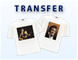

Transfer printing
Transfer printing is the ideal print for light textiles. Anything is possible!
⏱ Ready in 1 hour
- Individually customisable
- Full-colour printing
- High, consistent and offset-like image quality
- Company logos or symbols are no problem
- Bitmap formats (jpg, png, gif, bmp etc.)
- Curves or vector graphics (cdr, ai etc.)
- Ideal for photos (including with text)
- High-quality textiles
- Washable up to 30 °C without any problems
Prices
All prices incl. 20 % VAT.
- Quantity discounts apply to the repeated production of the same print.